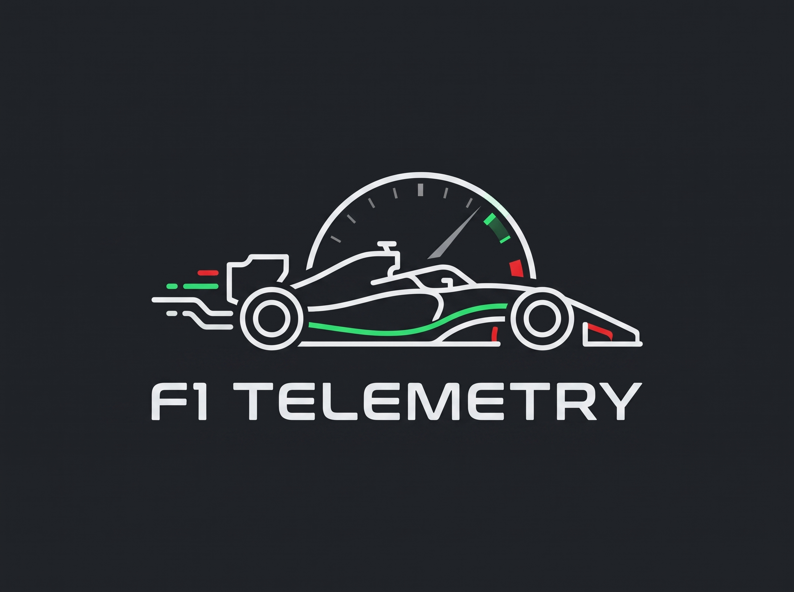
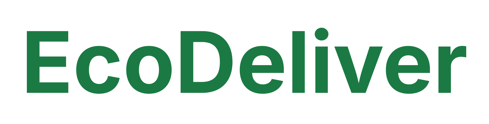

Buenas, soy Alejandro
Desarrollador web junior
Apasionado por la tecnología y el desarrollo web, y me encantan las tecnogías de vanguardia. Me gusta aprender y mejorar mis habilidades constantemente.
Habilidades Técnicas
Front-end
HTML5
CSS3
JavaScript
React
Bootstrap 5
Figma
Back-end
Node.js
Express
Java
PHP
C#
Bases de datos
Oracle
PostgreSQL
SQL
Herramientas
Git / GitHub
Docker
Vercel
Linux (Ubuntu)
Inglés B1
Proyectos Destacados

Dashboard Telemetría
Sistema de telemetría en tiempo real para simuladores. Recibe paquetes UDP y renderiza los datos en un dashboard web interactivo.
Java
WebSockets
HTML/CSS

EcoDeliver UI/UX
Diseño de interfaz para un servicio de paquetería ecológica en Sevilla. Creación de sistema de diseño y flujos de pantallas (Figma/Penpot).
Figma
Penpot
Diseño UI
Formación y Experiencia
Instituto Medac (sevilla) | 2025-Presente
Formación integral en desarrollo de software, abarcando desde el diseño de interfaces (UI/UX) y maquetación web, hasta la programación backend, despliegue en servidores web y administración de bases de datos. Aprendizaje basado en la creación de proyectos prácticos y reales.
Formación integral en desarrollo de software, abarcando desde el diseño de interfaces (UI/UX) y maquetación web, hasta la programación backend, despliegue en servidores web y administración de bases de datos. Aprendizaje basado en la creación de proyectos prácticos y reales.
Marzo 2027
Actualmente en búsqueda activa de una empresa del sector tecnológico para realizar el periodo de Formación en Centros de Trabajo (FCT). Especialmente interesado en oportunidades de desarrollo remoto o híbrido, donde pueda aportar valor escribiendo código limpio y seguir creciendo profesionalmente.
Actualmente en búsqueda activa de una empresa del sector tecnológico para realizar el periodo de Formación en Centros de Trabajo (FCT). Especialmente interesado en oportunidades de desarrollo remoto o híbrido, donde pueda aportar valor escribiendo código limpio y seguir creciendo profesionalmente.
GARDA IMPORT | Experiencia previa
Desempeño de diversos roles incluyendo operario, repartidor y encargado. Esta experiencia me ha dotado de una fuerte ética de trabajo, capacidad de adaptación, habilidades de resolución de problemas bajo presión y gestión de equipos; competencias transversales clave que ahora aplico en el desarrollo de software.
Desempeño de diversos roles incluyendo operario, repartidor y encargado. Esta experiencia me ha dotado de una fuerte ética de trabajo, capacidad de adaptación, habilidades de resolución de problemas bajo presión y gestión de equipos; competencias transversales clave que ahora aplico en el desarrollo de software.